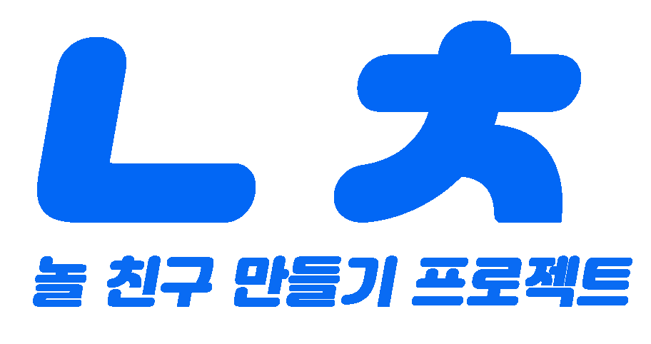
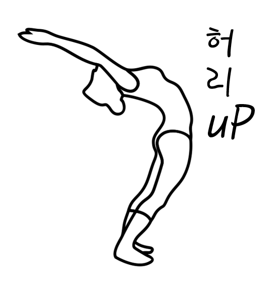

 놀친구를 만들기 위한 모바일 어플리케이션 입니다. 안드로이드 스튜디오, php, firebase를 사용하여 개발했습니다. firebase의 FCM 기능을 활용한 채팅을 통해 상대방과 같이 놀 수 있는 어플리케이션 입니다.
 현대인들의 굽은목, 허리 등의 자세 교정을 위한 어플리케이션 입니다. 안드로이드 스튜디오, 파이썬, 아두이노를 사용하여 개발했습니다. 라즈베리 카메라로 사용자 측면 자세를 인식하여 자세가 잘못됐을 경우, 아노이노 진동기기를 통해서 진동을 받게되고, 그로 인해 사용자는 바른 자세를 유지할 수 있게됩니다.